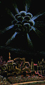

In the highly sensitized state of ayahuasca intoxication, the icaros help structure the vision. They can also modify the hallucinations themselves. Luna reports: "There are icaros for increasing or diminishing the intensity and color of the visions, for changing the color percieved, and for directing the emotional contents of the hallucinations." 
Vegetalistas are masters of synaesthesia. Through using the most interesting acoustic effects produced by whistling and singing, the geometric designs can be seen acoustically.
The icaros are the quintessence of shamanic power. A good vegetalista is able to "orchestrate" beautiful or transformative visions through his magic melodies. Competitions sometimes arise between maestros to "monopolize" the visions of those present—a kind of competitive "jam session" where they unleash all their tricks.
|